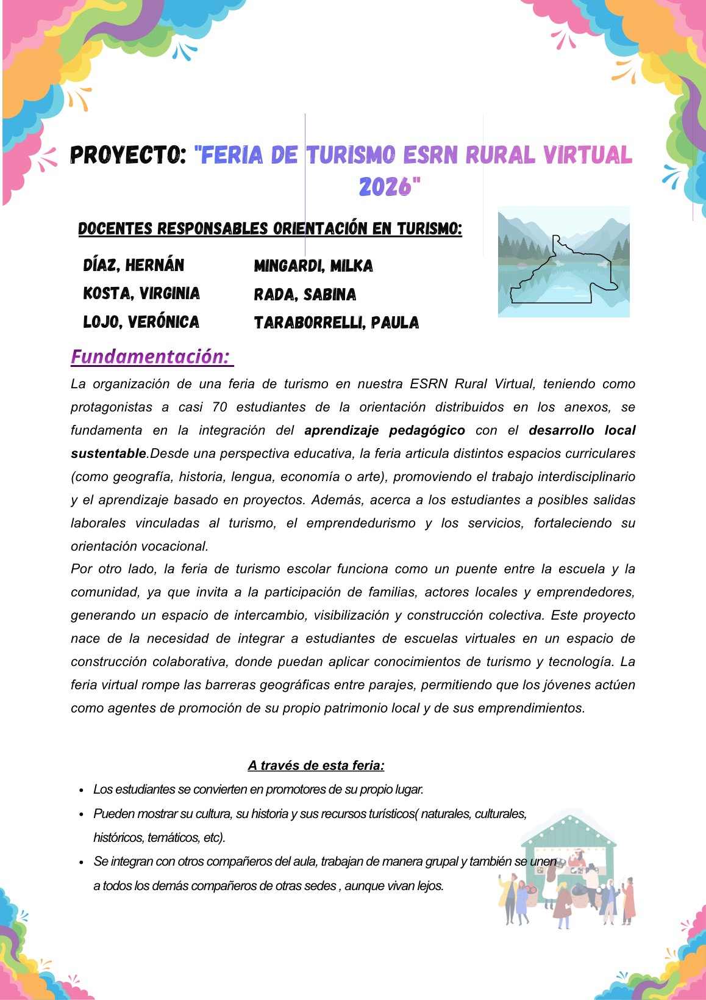
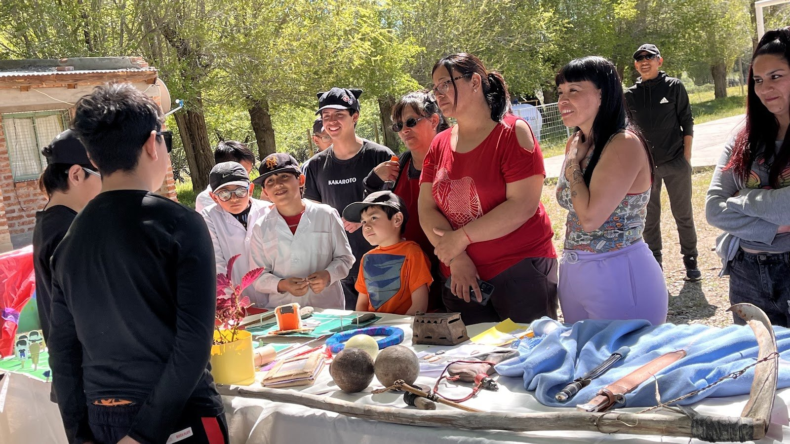
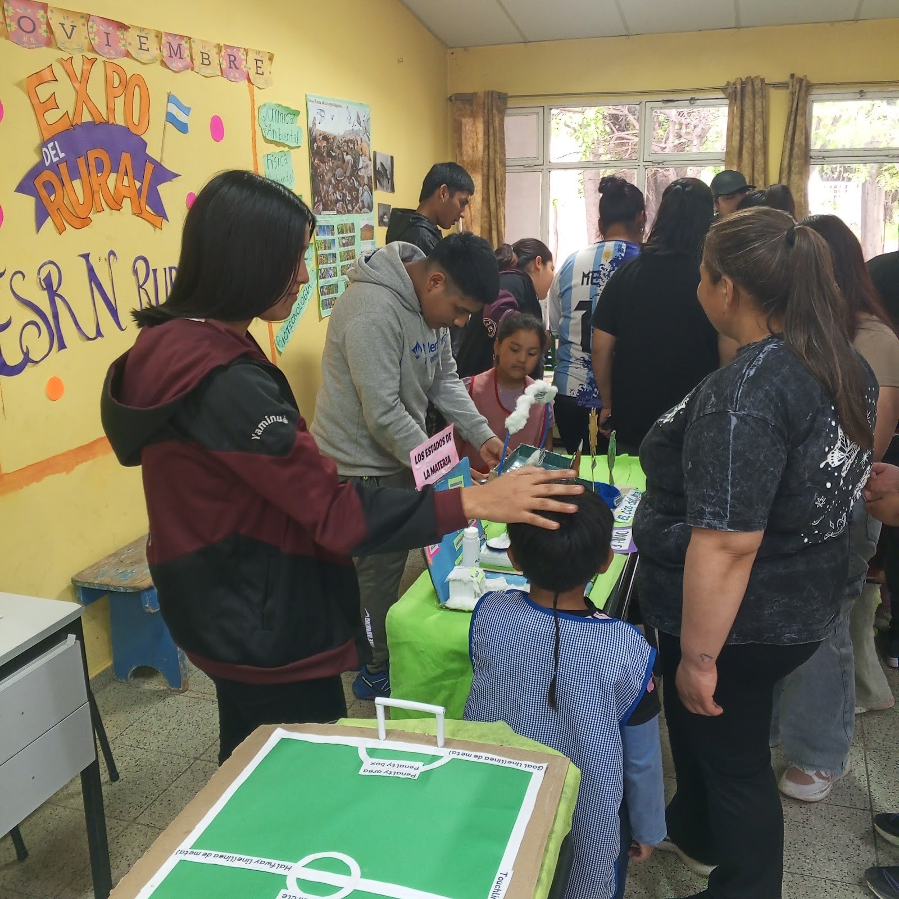
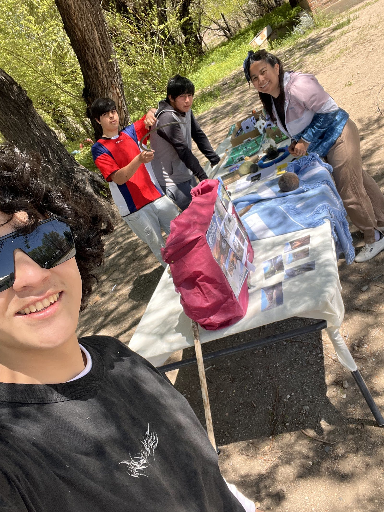

¿Y si cada paraje se mostrara a sí mismo como un destino para conocer?
Esa es la idea de la Feria de Turismo de la ESRN Rural Virtual: que casi 70 estudiantes de la Orientación Turismo, repartidos en los anexos, se conviertan en promotores de su propio lugar. La feria une lo que aprenden en la orientación con la realidad de sus comunidades y está pensada para la semana del Día Mundial del Turismo, junto con la Expo de la escuela.

Estudiantes que promocionan su lugar
La feria articula distintos espacios curriculares, como geografía, historia, lengua, economía y arte, y funciona como un puente entre la escuela y la comunidad: invita a familias, vecinos y emprendedores a participar. También acerca a los estudiantes a posibles salidas laborales en el turismo, los emprendimientos y los servicios.

- Muestran su cultura, su historia y sus recursos turísticos: naturales, culturales, históricos y temáticos.
- Trabajan en grupo con sus compañeros de sede y se unen a estudiantes de otros parajes, aunque vivan lejos.
- Piensan el turismo como un complemento de la producción rural, que puede mejorar la vida de las familias.
Una feria sin distancias
Como es una feria virtual, las distancias entre parajes dejan de ser un problema. Cada sede arma su stand con un video promocional, fotos y el material que reunió; durante la feria hay recorridos guiados y salas de videoconferencia donde los estudiantes presentan en vivo sus proyectos a visitantes de otras localidades. Los parajes se agrupan en «corredores turísticos» según su cercanía, y todo queda reunido en una galería virtual en la plataforma de la escuela.

Ideas para cada paraje
Para empezar, los estudiantes relevan lo que su lugar tiene para ofrecer y eligen una idea. Algunas de las propuestas:

- Artesanías: visitar artesanos y artesanas, conocer técnicas de telar, cerámica, madera y cuero.
- Gastronomía típica: recetas tradicionales, una muestra gastronómica o un menú turístico local.
- Relatos y leyendas: entrevistar a vecinos y recrear las historias del lugar.
- Turismo fotográfico: un concurso de «Postales de mi lugar» y hasta astroturismo.
- Experiencia rural: visitar chacras, huertas y emprendimientos familiares.
- Cartelería y senderos: señalizar atractivos y caminos que todavía no tienen carteles.
- Souvenirs: llaveros, postales o bolsitas aromáticas con identidad local, con materiales reciclados.
- Fiestas y festivales: mostrar las fiestas tradicionales, la música, la danza y el deporte de cada lugar.
Lo que se aprende
El proyecto recorre seis ejes: los tipos de turismo como herramienta para valorar el territorio, el turismo sustentable, los emprendimientos turísticos de Río Negro, los servicios turísticos, el patrimonio cultural y natural, y la comunicación de proyectos. La idea de fondo es que cada estudiante descubra el valor de su lugar y aprenda a contarlo.